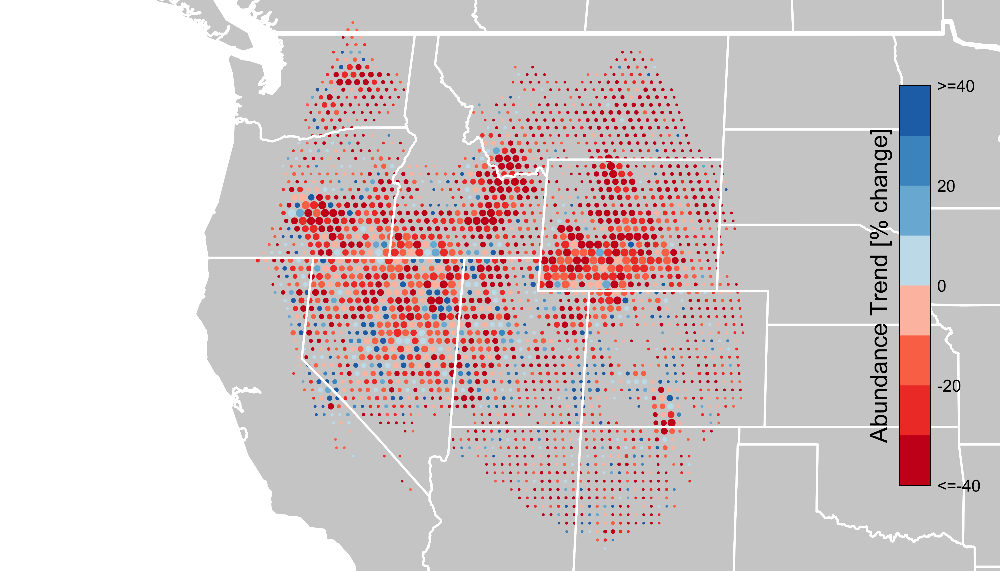

eBird｜賞鳥紀錄與鳥類增減
少看到鳥，
代表鳥真的變少了嗎？
換個時間、走另一段路，記錄到的鳥就可能不同。要看多年來的增減，得先處理觀察方式的差異。
畫面中仍是同一組四隻示意鳥。切換兩次觀察，看看改變的是什麼。
觀察方式不同，怎麼比較？短觀察15分鐘・0.5公里記錄2隻
較長觀察60分鐘・2公里記錄4隻
鳥的位置與數量相同，兩次的記錄量卻不同。這些數字是教學設定，不是研究紀錄，也不是按時間比例換算鳥數。
把觀察方式一起放進來看
觀察方式不同，
怎麼比較多年紀錄？
賞鳥者可以自由選擇時間和地點。這讓紀錄涵蓋很多地方，也讓不同年份的數字未必能直接比較。
一筆紀錄，不只寫了鳥數。
- 時間
- 哪一天、什麼時段、停留多久
- 路線
- 在哪裡觀察、走了多遠
- 環境
- 當地棲地與周圍的環境特徵
回看剛才的兩筆示意紀錄：
| 觀察 | 時間／距離 | 記錄 |
|---|---|---|
| 短觀察 | 15分鐘／0.5公里 | 2隻 |
| 較長觀察 | 60分鐘／2公里 | 4隻 |
這裡示意為什麼觀察方式重要，沒有把2隻「補算成」4隻。
模型分開學習，再估增減。
類似條件，通常記錄到多少？
先學習鳥數紀錄與環境、觀察條件的關係。
各年的觀察方式改了什麼？
再學習哪些觀察條件隨年份改變，減少它們與鳥類變化混在一起的影響。
最後，估計各地的趨勢。
研究者也用已知趨勢的模擬資料，檢查方法還有哪些偏差。
這是DML方法的概念說明。本頁未訓練或執行模型。
看完整過程從灌叢裡的鳥，
看到地圖上的增減。
120秒，無聲。可暫停、移動時間軸、檢查每一幀，或在原頁放大觀看。
開啟「看動畫」後載入播放器；下方保留完整解說。
不播放，直接閱讀動畫解說
牠就在灌叢裡。
Sage Thrasher生活在北美西部的蒿灌叢草原。鳥在不在，和我們有沒有看見，是兩個問題。
同一片地方，記錄卻不同。
兩個畫面都保留相同四隻示意鳥。停留時間、行進距離不同，可能留下不同記錄。2／4隻是教學情境，不是研究資料。
先看觀察改了什麼。
模型學習鳥數紀錄與觀察條件，也學習觀察方式隨年份的差異，再估計區域趨勢。
回到真實地圖。
官方Sage Thrasher地圖呈現2012–2022繁殖季的累積相對豐度變化。顏色與圓點大小，各自回答不同問題。
先知道答案，再檢查方法。
研究者以已知趨勢的模擬資料檢查方法。原論文驗證物種與Sage Thrasher地圖示例分開呈現。
先找出哪裡在變，再調查為什麼。
地圖可協助研究者選擇後續調查地點。相對豐度不是全部鳥隻數，也不能單靠地圖判定變化原因。
讀懂地圖，再回到現場
先找出哪裡在變，
再調查為什麼。
這張官方示範圖顯示，同一種鳥在不同區域有不同的增減方向。它提供調查線索，原因仍需要其他觀測來釐清。

三件事分開讀。
- 紅色／藍色
- 下降／上升，顏色深淺表示變化幅度。
- 圓點大小
- 約反映研究期間中段的相對豐度，不是下降或上升的幅度。
- 期間與尺度
- 2012–2022的累積變化，每格約27公里；不能當成每年變化或附近每一處的狀況。
這張示範圖沒有畫出各格的信賴區間。近白色不能直接解讀成「較不確定」；沒有趨勢標示，也不代表沒有鳥。
地圖能幫忙，還需要人做什麼？
研究者可以先找出下降區域，再結合棲地、天氣或其他觀測安排調查。變化原因要另找證據，不能由地圖直接推定。
相對豐度是在標準觀察條件下估計的記錄量，不是對所有鳥隻做過一次普查。
研究者怎麼確認方法有用？
Fink等人用另外三種鳥的資料及已知趨勢模擬，檢查方法能否分辨增減與區域差異。以下是論文Table 2的「All」彙整列，不是Sage Thrasher或本頁的實跑結果。
| 物種 | 平均方向誤判率 | 80%區間實際涵蓋率 |
|---|---|---|
| Wood Thrush | 2.4% | 47% |
| Canada Warbler | 6.8% | 49% |
| Long-billed Curlew | 3.4% | 61% |
方向誤判是指模型判定趨勢非零，方向卻與設定相反；表中是作者跨測試情境彙整的平均率。標成80%的區間，在這三種鳥的模擬測試裡，實際只有47%至61%包含設定的真實趨勢。作者因此指出不確定性估計還有改善空間。這些比例不是鳥數準確率。
研究、資料與圖片來源
研究方法
Fink等（2023），A Double machine learning trend model for citizen science data。Methods in Ecology and Evolution。方法示意、三物種驗證與Table 2依正式論文核對。
eBird官方FAQ：觀察方式、相對豐度、趨勢與不確定性。
官方地圖
eBird Trends Data Products官方說明。Sage Thrasher，2012–2022繁殖季，2022資料版本；原始PNG保留。
Fink等（2023），eBird Status and Trends，Data Version 2022，Released 2023，DOI：10.2173/ebirdst.2022。使用條款。
本頁的解釋及建議由製作者負責，不代表Cornell Lab of Ornithology的立場。沒有重新執行eBird模型。